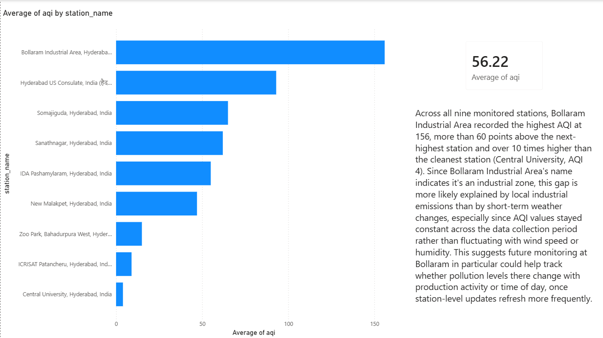
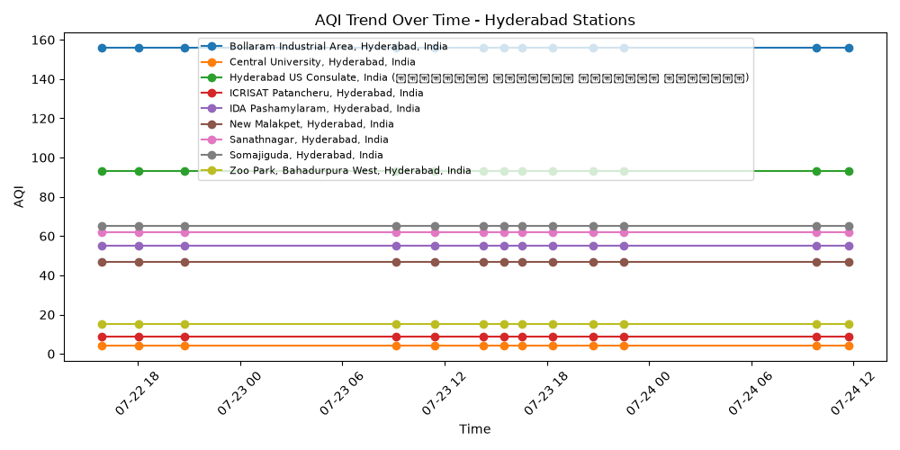

About the Project
This project analyses air quality across nine monitoring stations in Hyderabad. I collected air quality and weather information using real-time APIs and used SQL, Python, Pandas and Power BI to analyse and visualize the data.
The main objective is to help people understand air pollution in different areas and make informed decisions about their surroundings.
Project Overview
Problem Statement
Air pollution levels can vary across different locations in a city. This project compares air quality readings from multiple Hyderabad monitoring stations to identify areas with higher pollution levels.
Technologies Used
SQL (SQLite): Data storage and querying
Python: Data collection and analysis
Pandas: Data cleaning and processing
Power BI: Interactive data visualization
APIs: WAQI and Open-Meteo
Power BI Dashboard
The dashboard presents air quality comparisons, AQI indicators and important insights from the analysis.

Air Quality Trend Analysis

Key Findings
In the collected project dataset, Bollaram Industrial Area recorded the highest AQI at 156, while Central University recorded an AQI of 4.
This comparison highlights differences in recorded air quality across the monitored locations.
Impact on People
This project demonstrates how data analytics can make environmental information easier to understand. It can help people become aware of air quality in their areas and consider appropriate precautions.
Project Documentation
Important Note
This website presents the analysis and findings from the data collected during project development. It is a project showcase and does not currently provide continuous live API updates.